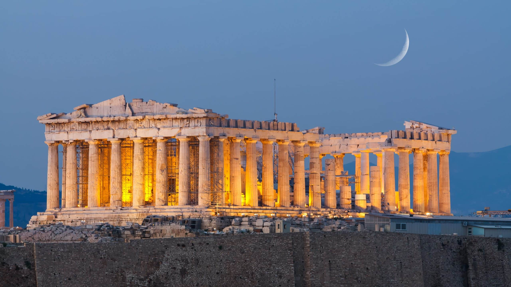
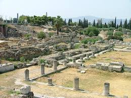
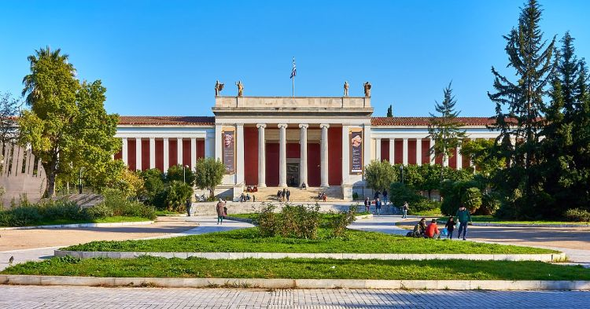

<!DOCTYPE html>
<html>
    <head>
        <title>Atena</title>
        <link rel="stylesheet"href="Atena.css">
    </head>
</html>
<body>
    <br>
      <ul>
    <li><a href="Početna stranica.html">Početna stranica</a></li>
    <li><a href="O Grčkoj.html">O Grčkoj</a></li>
    <li><a href="Destinacije.html">Destinacije</a></li>
    <li><a href="Kultura.html">Kultura</a></li>
</ul>
    
 <h1 class="Atena"><center>Atena</center></h1>
 <h2>Atena-kolijevka zapadne civilizacije</h2>
 <p>Atena, glavni grad Grčke, jedan je od najstarijih gradova na svijetu s poviješću dugom više od 3.400 godina. Poznate kao kolijevka demokracije, filozofije i umjetnosti, Atena i danas privlači milijune posjetitelja koji žele doživjeti duh antičke Grčke.</p>
 <h2>Povijest i kultura</h2>
 <p>Atena je bila središte antičke civilizacije i dom velikim filozofima poput Sokrata, Platona i Aristotela. Njihov doprinos razvoju politike, znanosti i kulture oblikovao je temelje modernog društva.
Danas Atena uspješno spaja svoje bogato povijesno nasljeđe s modernim životom, živopisnim ulicama i dinamičnom kulturnom scenom.</p>
<h2>Najpoznatije znamenitosti</h2>
<div class="galerija">
    <div class="stavka">
        <h3>Akropola i Partenon</h2>
        
        <p>Najveći simbol Grčke i jedan od najpoznatijih spomenika na svijetu. Smještena na brdu koje dominira gradom, Akropola pruža spektakularan pogled na Atene.</p>
    </div>

    <div class="stavka">
        <h3>Agora</h3>
        
       <p>Nekadašnje središte javnog života u antičkim Atenama. Ovdje su se održavali politički sastanci, trgovina i različita okupljanja.</p>
    </div>

    <div class="stavka">
        <h3>Nacionalni arheološki muzej</h3>
        
        <p>Jedan od najvažnijih muzeja na svijetu s izložbama koje prikazuju bogatu grčku povijest kroz tisućljeća.</p>
    </div>
</div>

<style>
    .galerija {
        display: flex;
        gap: 50px; 
    }

    .stavka {
        text-align: center;
    }

    .stavka img {
        width: 350px;    
        height: 250px;
        display: block;
    }

    .stavka a {
        display: block;
        margin-top: 8px;
        text-decoration: none;
        font-size: 20px;
        color: #000;
    }
</style>
<h2>Moderna atena</h2>
<p>Osim povijesnih lokacija, Atena nudi i moderan urbani ritam – restorane, trgovine, kulturne događaje, koncerte i bogat noćni život. Grad je domaćin brojnih festivala, uključujući Atena & Epidaurus Festival koji slavi kazalište i glazbu.</p>
<h2>Zašto posjetiti Atenu?</h2>
<p>impresivna povijest i svjetski poznata arheološka nalazišta
<br>
vrhunska grčka kuhinja
<br>
ugodno mediteransko podneblje
<br>
šarm tradicionalnih četvrti i energija modernog grada
<br>
blizina mora i otočnih destinacija
<br>
Atena je grad koji spaja prošlost i sadašnjost, stvarajući jedinstveno iskustvo za svakog posjetitelja.</p>
<br><br><br><br><br><br><br>
<footer class="footer">
  <p> Hana Šerbeđija<br> 2.c</p>
</footer>